Teachable Machine ve Kart-ON Oyun ile programlamanın temellerini öğrenebileceğimiz ve hayatımızdaki yapay zeka örneklerini keşfedeceğimiz bir yolculuğa çıkıyoruz. Kart-ON Oyun'un temel programlama blokları ile sıkça oynadığımız oyunların temelinde yatan mantık yapısını kodlayabiliriz. Teachable Machine ile de bu oyunları kodlarken yapay zeka algoritmalarından yararlanabiliriz.
Bu örnekte, Kart-ON ile "Flappy Bird" Oyununu Kodlayacağız. Oyun için biz bazı ön hazırlıklar yaptık ve size üstüne düşüneceğiniz bazı görevler bıraktık. Bu görevler için on tane programlama bloğunu size bırakıyoruz. Bu komutları kullanarak beş adet görevi tamamlayacaksınız.
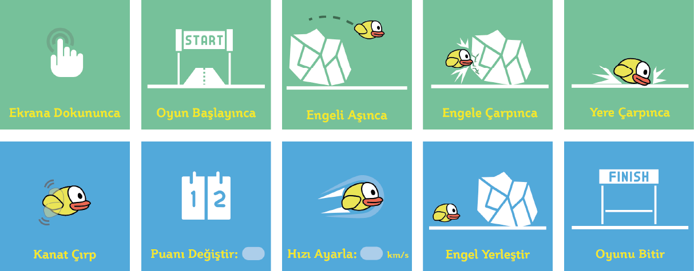
Yukarıdaki şekilde sıralanan komutları önce fiziksel olarak tasarlayıp, sonra birer programlama bloğu olarak kullanarak beş adet görevi tamamlayacaksınız. Mesela, benim kendi uygulamam için tasarladığım bazı kartlar aşağıdaki gibi şekillendi.
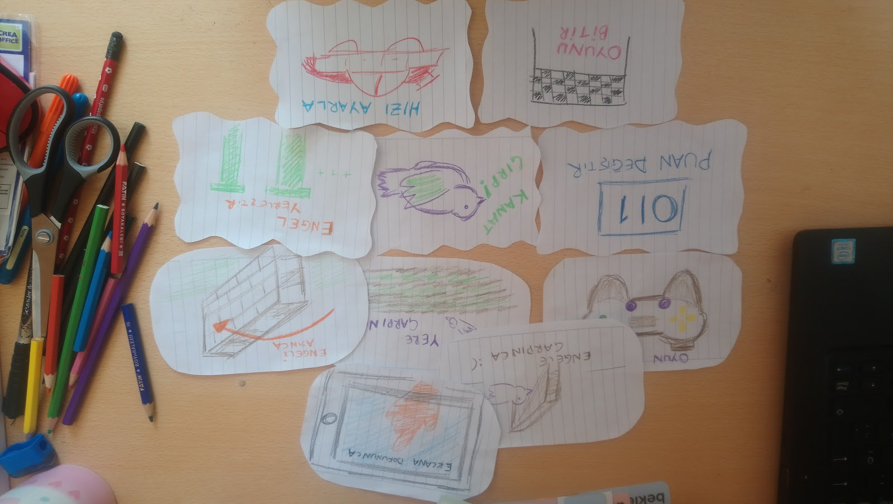
Haydi, bu programlama bloklarını, oyun hamuru, LEGO, kağıt, kalem veya farklı fiziksel materyallerler ile fizikselleştir.
Teachable Machine yapay zekanın yaygın kullanım alanlarından nesne ve ses tanıma teknolojilerini kendi uygulamalarımızda hızlıca kullanabilmemizi sağlayan bir web uygulamasıdır.
Kart-ON Oyun'un programlama kartlarını kendi tasarlamak isteyenler için, Teachable Machine'den çıkan sonuçları hızlıca entegre edilebilir hale getirdik.
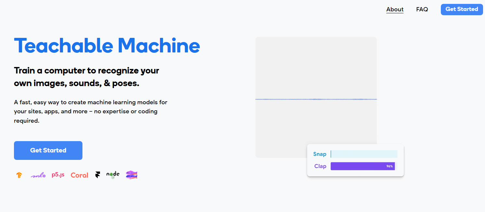
Yeni Bir Proje Açalım
- Image Project: Fotoğrafını çektiğimiz nesnelerin kamera yardımı ile tanınmasını,
- Audio Project: Mikrofon ile kaydettiğimiz sesleri bilgisayarımızın ayırt edebilmesini,
- Pose Project: Hareketler sergilediğimiz videolardaki akışın tanınmasını sağlayacak eğitim arayüzlerini başlatacaktır.
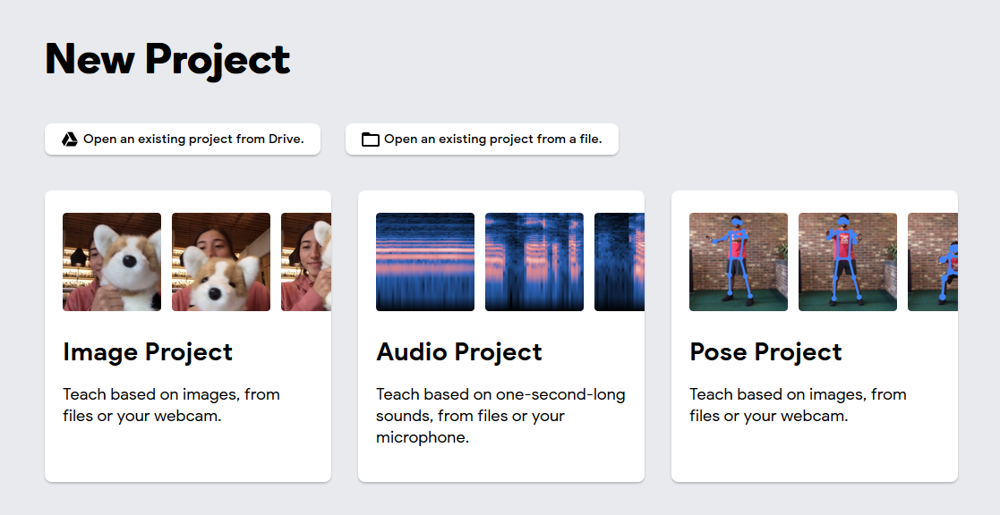
Biz "Flappy Bird" oyununda hazırlayacağınız kartların bilgisayar tarafından tanınabilmesini istiyoruz. Yani aslında bu kartlar bilgisayar için birer "resim tanıma" problemi olacak. Bilgisayara bu problemi çözdürebilmek için Image Project seçeneğini seçerek devam ediyoruz.
Yeni bir proje başlattığınızda yapay zeka problemlerinin temel akışını bize gösteren bir ekran ile karşılaşırız. Şu anki yaygın kullanımda olan yapay zeka uygulamaları, çözmek istediği problemi anlamlandırmak için fazla sayıda veri toplar. Örneğin elma ile armutu ayırabilen bir sistem eğitmek istiyoruz. Bu sistemi oluşturmak için öncelikle birçok elma ve armut resmi bulmalıyız. Böylece bunları sisteme besleyerek, sistemin ikinci aşamaya geçmesini sağlayabiliriz.
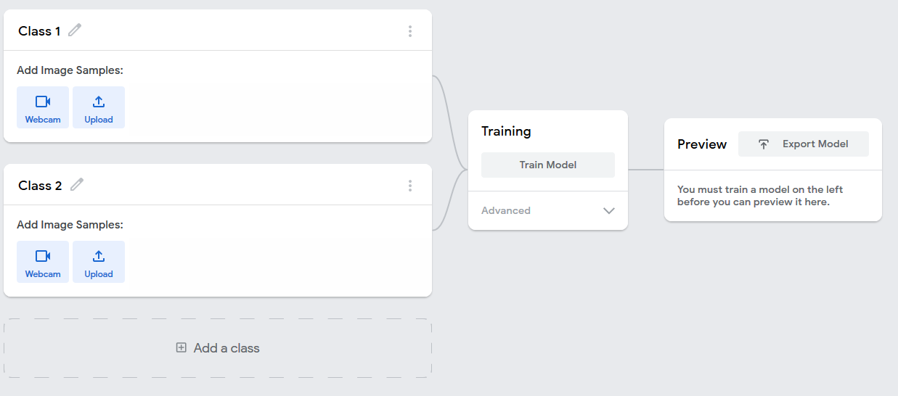
İkinci aşamaya geçmeden önce, programlama kartlarımızı tanıtmak için "Webcam" i açıyoruz. İlk olarak "Ekrana Dokununca" komutunu tanıtmak için, bu komut için bir çizim hazırlıyorum. Siz de bir çizim yapabileceğiniz gibi, çevrenizdeki herhangi bir nesneyi, programlama komutu olarak kullanabilirsiniz!
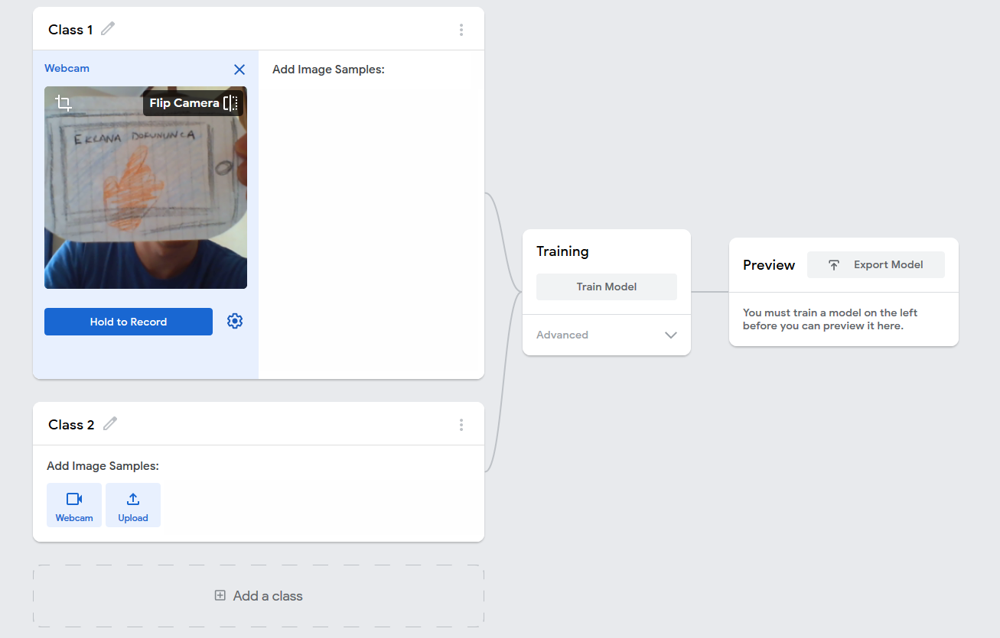
Eğer bu komut için hangi görüntüyü kullanacağınızı seçtiyseniz, Hold To Record butonuna bastığınız süre boyunca bu görüntüyü yakından, uzaktan ve hafif farklı açılardan çeşitli fotoğraflarını kaydetmeye başlayabilirsiniz. Ben yaklaşık 40 tane fotoğraf kullanarak, yapay zeka modülümü eğitmek istiyorum. Bunun için 40 adet farklı görünümlerden fotoğrafı çekene kadar basılı tutabilirsiniz. Veya, aşağıdaki fotoğrafta gördüğünüz gibi, önce "Çark" şeklindeki ikona basarak, fotoğraf çekme ayarlarını değiştirip, çekme işlemini otomatik hale getirebiliriz.
FPS, saniyede kaç adet fotoğraf çekileceğini, Delay, çekme işleminin kaç saniye sonra otomatik olarak başlayacağını, Duration ayarı ise kaç saniye boyunca fotoğraf çekmeye devam edeceğini belirtir. Aşağıdaki ekranda verilen ayarlar ile bilgisayarınızın işlem kapasitesine göre yaklaşık 40 fotoğraf çekebilir bir sistem ayarı gerçekleştirmiş oluyoruz.
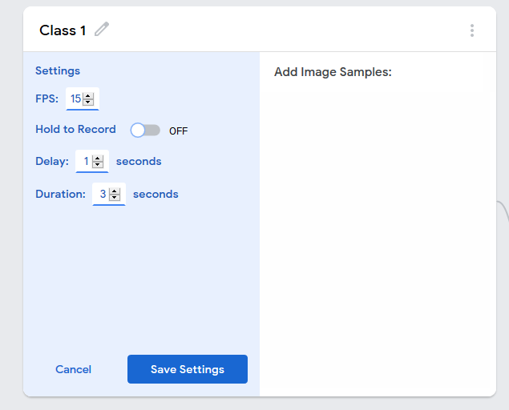
"Save Settings"e basıp, ayarlarımızı kaydettikten sonra, bu ayarlar ile çekime başlayalım.

Peki, bu çektiğimiz fotoğraflar ile sisteme tanıttığımız programlama kartları nasıl uygulama içinde kullanılacak? Bunun için bir standart geliştirmeye ihtiyacımız var. Bizim aklımıza gelen sistem şu oldu:
Programlama Komutu |
Sınıf Numarası |
Ekrana Dokununca |
1 |
Oyun Başlayınca |
2 |
Engeli Aşınca |
3 |
Engele Çarpınca |
4 |
Yere Çarpınca |
5 |
Kanat Çırp |
6 |
Puan Değiştir |
7 |
Hızı Ayarla |
8 |
Engel Yerleştir |
9 |
Oyunu Bitir |
10 |
Tabloda gördüğün programlama komutları için bir sınıf numarası belirledik. Bu sınıf numarasını her bir eğitim kartının başlığı olarak değiştirirsen, artık Kart-ON Oyun - Flappy Bird uygulaması senin tasarladığın kartların kendi sisteminde hangi komuta karşılık geldiğini anlayabilir.
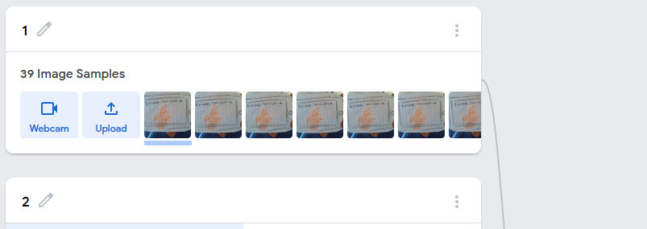
Yukarıdaki şekilde olduğu gibi "Ekrana Dokununca" sınıfımın ismini, tabloda karşılık gelen "1" olarak değiştiriyorum.
İlk üç programlama komutu sınıfınızı oluşturduktan sonra, modelinizi eğitim sonuçlarınıza göz atmak daha fazla ilerlemeden yararlı olacaktır. Bu eğitimi başlatmak için "Training" kutusundaki butona basalım.
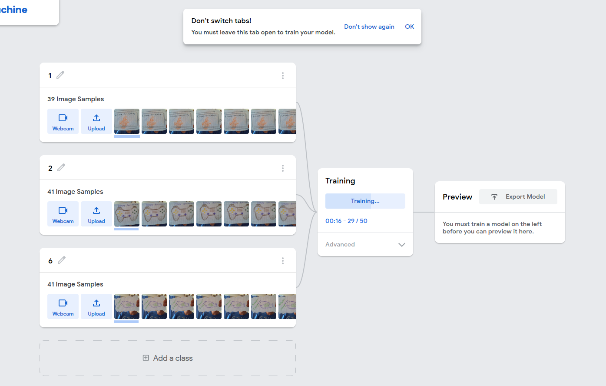
Eğitim işlemi bittikten sonra açılan "Preview" kutusunda modelimizin başarısını test edebiliriz. Her bir programlama kartını kameraya gösterip, "Output" alanında oluşan başarı çubuklarının oranını değerlendirelim. Eğer çubuklar çoğu zaman %90'dan daha yüksek değerleri gösteriyorsa, sistem kartları iyi tanıyabiliyor demektir. Eğer sistemimizin kafası fazla karışık ise, programlama kartlarını daha iyi ışık ortamlarında, farklı açılardan çekmeye devam edelim.
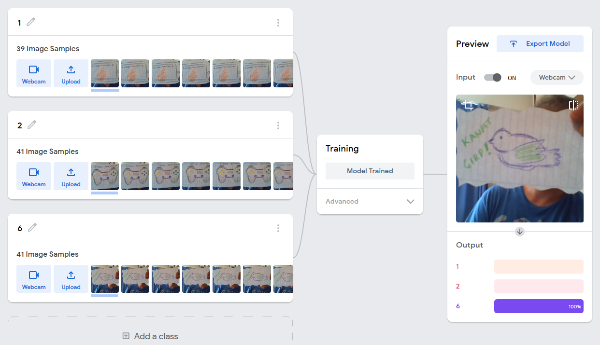
Benim gösterdiğim örneklerde model neredeyse %100 oranla gösterdiğim kartları tanıyabiliyordu. Ama aşağıdaki örnekte olduğu gibi farklı veya boş bir kart gördüğünde model kararsızlık yaşıyor. Fark edeceğiniz üzere, yapay zeka bizim verdiğimiz bilgiler dışında bir bilgiye erişimi olmadığı için bizim kurduğumuz bu üç sınıflık dünyada kendine göre seçimler yapmaya çalışır. Ama bunun başka bir kart olduğunu bize söyleyemez.
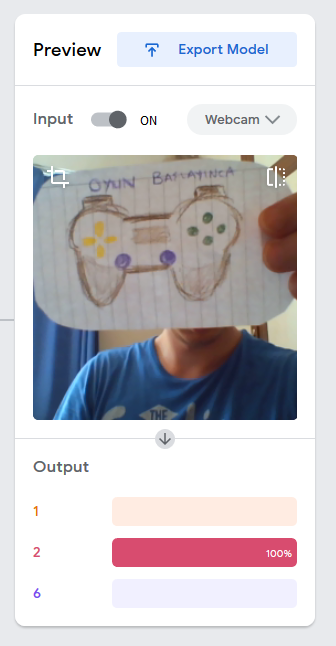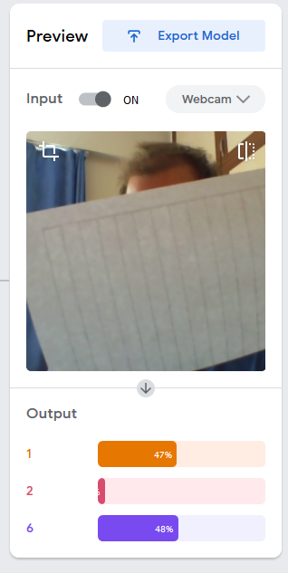
Tüm programlama kartlarımızı oluşturup, başarı oranlarını deneyip, modelimizi tamamladıktan sonra, bu modelimizi oyunda nasıl kullanacağız? Preview kartının üst kısmında bulunan "Export Model" butonuna basarak, "Sharable Link"'imizi yani paylaşılabilir bağlantımızı alabiliriz. Aşağıdaki gibi açılan penceredeki "Upload my model" butonuna tıklayarak, modelimizin bağlantısını oluşturalım.
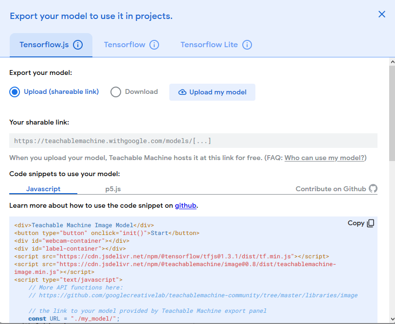
Bağlantı oluşturma işlemi tamamlandığında "Your Shareable Link" altında beliren linki kopyalayabilirsin.
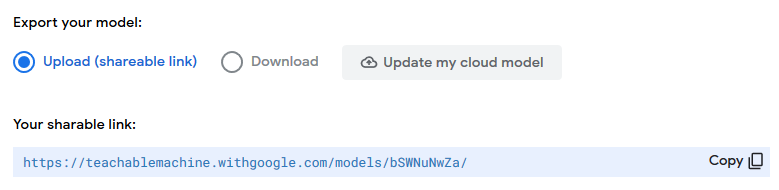
Kopyaladığınız bu linki, (1) Kart-ON Oyun açılış sayfasındaki kutucuğa kopyalayıp, (2) Flappy Bird oyun kutusuna tıklayarak, Flappy Bird oyununu kodlamak için kullanabilirsiniz.
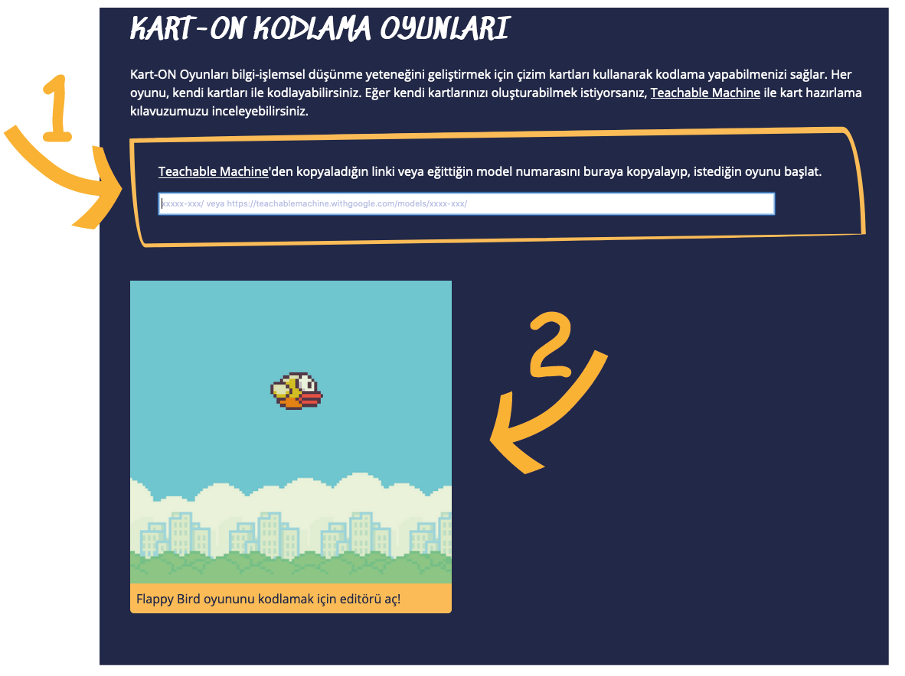
Eğer Teachable Machine projesini kaydetmek, ve sonrasında geliştirme yapmak isterseniz, "Teachable Machine" başlığının yanındaki üç çizgili menü ikonuna tıklayıp, "Save Project to Drive" seçeneği ile Google Hesabınız aracılığı ile Google Drive'a modelinizi kaydedebilirsiniz.
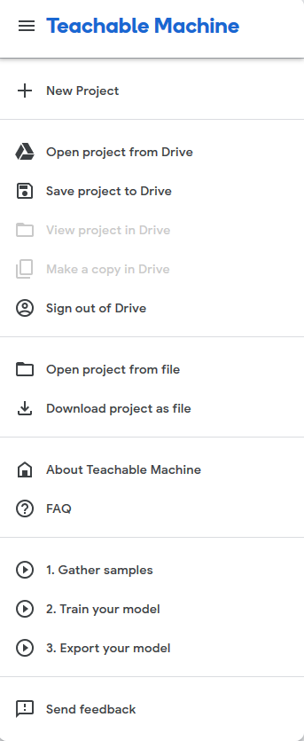
Projeyi kaydettikten sonra, Google hesabınız ile bağlanarak, istediğiniz zaman projeyi tekrar açabilirsiniz.